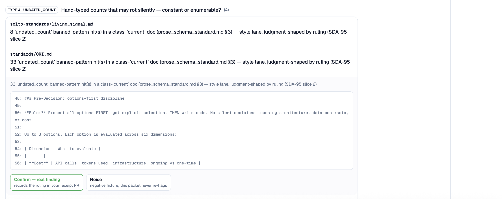
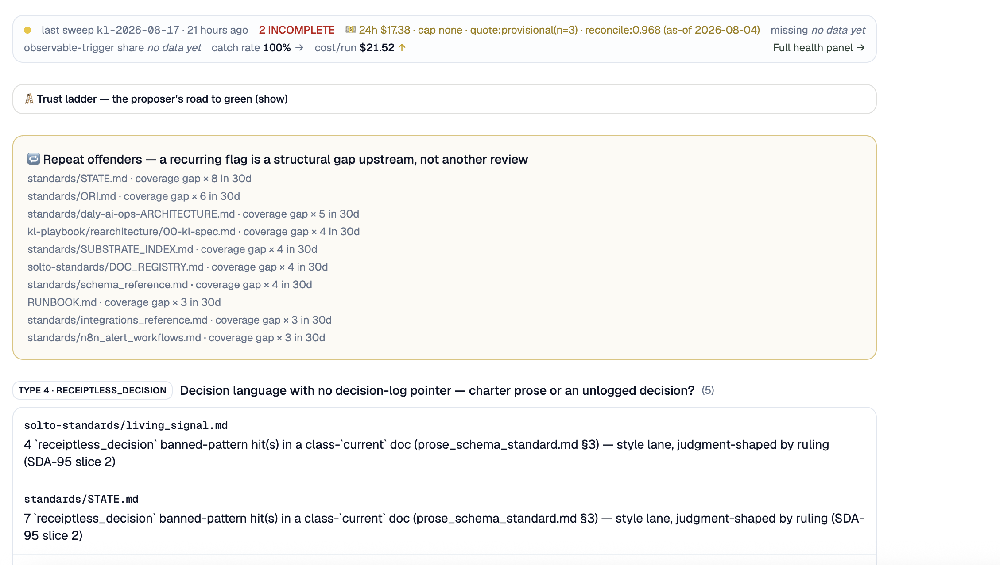

A knowledge layer that keeps its own docs honest.
Companies move fast and their documentation doesn't. Docs go stale because maintaining them takes too long, so knowledge lives in people's heads and turnover gets risky. Now add AI agents to that. Agents don't remove the bottleneck, they move it — and if they're reading from stale or thin context, they turn it into risk.
I learned this the direct way, running my business on agents that were acting on docs that were true for about two days each. Confidently wrong costs more than never starting. So I built the layer underneath first: a knowledge layer that keeps its own docs honest. I am client zero. It runs on its own docs, daily, in production.
Every number on this page is measured, not asserted — as of 2026-08-26, from the production repo.
The loop, closed
Three lanes, in order of cost. Write-time: 41 deterministic checks at pre-commit — pointer rot, count drift, supersession, cross-doc consistency. If it's computable, no LLM is involved, and a failure blocks the commit. Scheduled sweep: catches what slips past commits; mechanical drift gets fixed into a PR, judgment calls go to a human. Always. Semantic judge: claims judged against the code as it is now, every verdict cites file:line. It proposes, you decide.
The judgment queue mid-review — evidence pinned to a snapshot, and the verdict is mine to make:

The health strip doing its job — an incomplete sweep flagged instead of hidden, cost per run on the meter, and repeat offenders named as structural gaps:

Ask a question, get a provable answer
The part most systems fake. Here the answer isn't from a chat model's memory — every line is traceable to the canon's current text, and the system says so out loud. This is real output, on local embeddings, at zero API cost:
$ kl ask "what phase is the build in right now?" compared against 18 live claims (model BAAI/bge-small-en-v1.5) ▸ system · current_phase (score 0.6959) current_phase = 2b ↳ standards/STATE.md:23 · snapshot caf8c750 · live ✓ · repro ✓
The receipts on every line: the doc and line the answer comes from, the exact content snapshot it was extracted from, a live check that the claim still stands, and a reproducibility check that re-running the extraction gets the same value. Measured on a golden set of paraphrase queries: 90% hit@1, and both out-of-corpus negative controls correctly scored below the answer floor — the honest header up top tells you how big the corpus really is, so an empty index reads as dark, never as "no answer exists."
The part a CTO reads twice
Least-privilege by construction
Reads and writes run on scoped database roles; the admin key never rides the request path. Row-level security is on everywhere, with zero grants to anonymous roles. Required secrets fail closed at startup — a missing token stops the boot, it doesn't degrade quietly.
Claims that verify themselves
Every security control the docs name is bound in a machine-checked registry: claim → module → the call site that proves it's on the path it claims. Five bindings hold today; a control that drifts out of its path warns on the next run.
A red-team ratchet in CI
Prompt-injection compliance is measured against a pinned baseline and can only ratchet up. The baseline records exactly which model versions it was measured on — a silent model bump gets named, never absorbed.
Spend that cannot run away
Every metered path carries a fail-closed ceiling — the scheduled sweep has an absolute dollar backstop, and every run persists its exact meter totals even when it crashes. "No record" and "$0" are never confusable.
Dependencies are pinned with a committed lockfile and audited in CI. Secret scanning runs over the full history. The engineering discipline behind all of it is written down and machine-enforced — the checks that gate this repo's own docs are the product, applied to itself.
About me
I see what's real, and I make it safe to move on it. That's the pattern under everything I build: find the problem nobody has named yet, then make it safe enough that people act on it instead of freezing. The knowledge layer is that same shape as software — see what's true, make it safe to act.
Also built: a scope-locked automation delivery
Solto Studio Pilot 1 — lead-capture automation
First paid pilot, delivered scope-locked in ten business days: Instagram lead capture through ManyChat and Tally, routed through n8n into Google Sheets, Bold Trail CRM, and Gmail follow-up. Small, boring, and exactly what was quoted — the same discipline as the knowledge layer, at a different size.